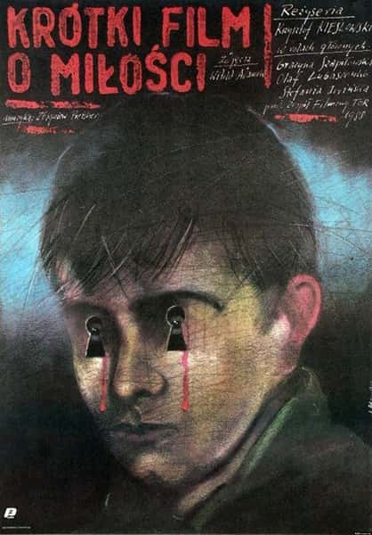
仪式
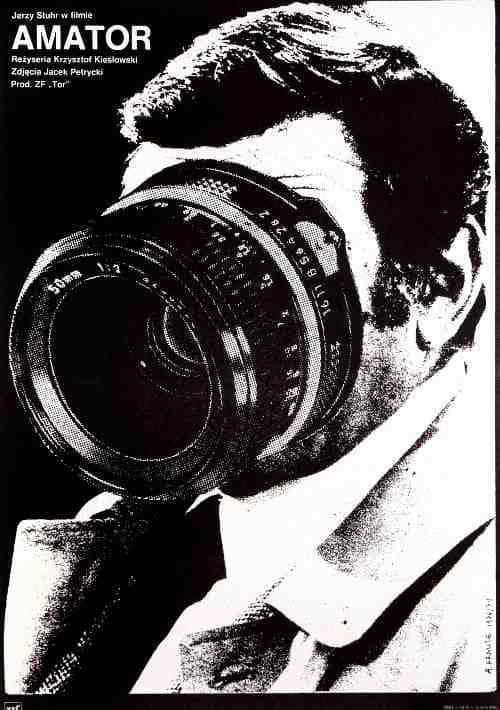
引入身外之物，才能思考
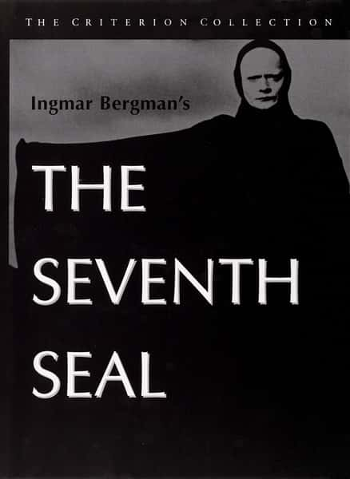
我染上了死亡
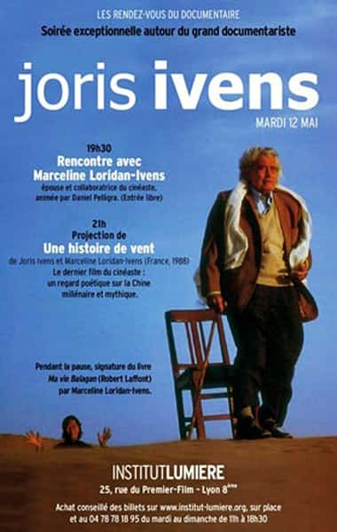
以我而始，以我而终。风一直吹，我在原地走了一次轮回。你看不见风，然后，你将看不见我
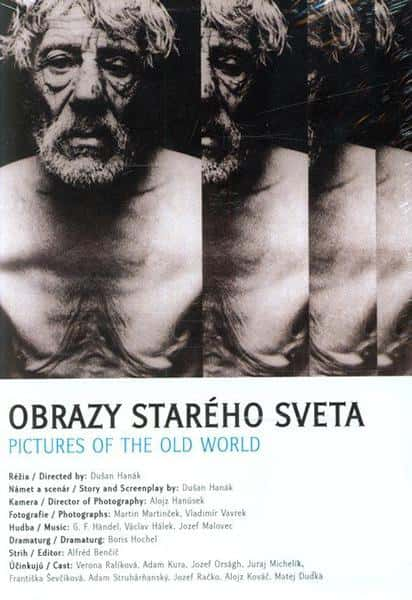
我出生的时候父母在地里干活，父亲去找人的时候，我掉了出来，被一块围裙接住，我就是这样出生的
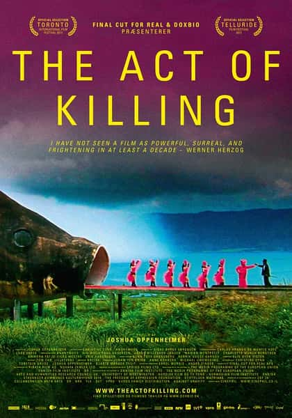
同时记录了N种悖论，有着迷人的复杂和模糊，抹去现实、抹去历史、抹去真相，导演下手太狠
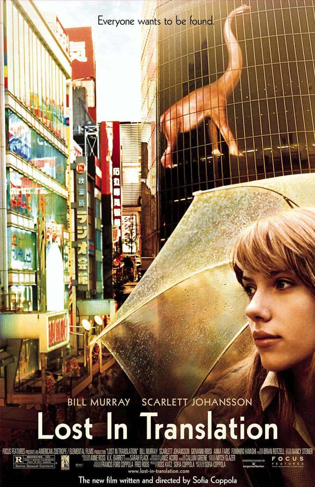
另一种异乡的经验，游离于世的两人，融于无言。有且只有那里，TA是确定的。配乐超神。有关告别。
黑色。边缘。欢笑。无关。坦克。无言。放屁。弹孔。胎记。生死。新娘。
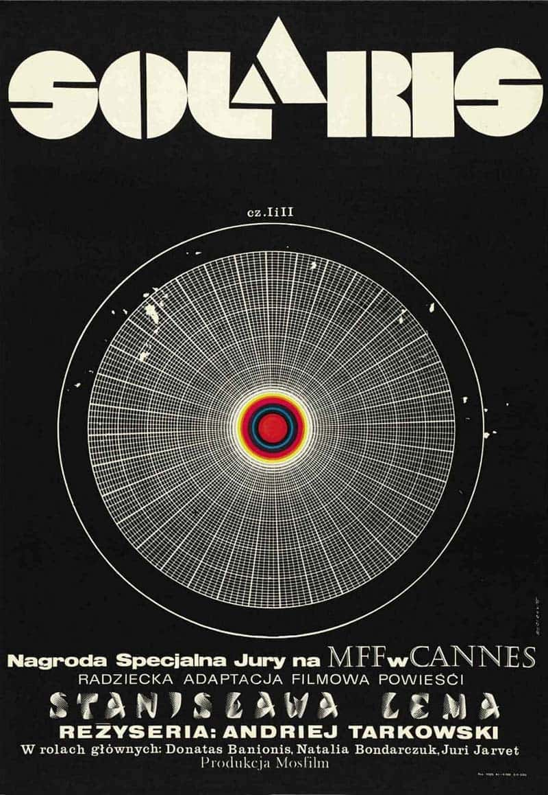
有爱，也有虚无。就像人类遇到一台超级计算机，所有输入都源自自己，无奈却理解不了输出。人性痴迷于永恒，无奈惟自身无法永恒。太空站环境的设置不太喜欢，结尾颇有与自己和解的味道。
看到的是动物性和本能平等、恢复和重建平衡的暴戾感、阶级坍塌和摧毁、工业进步/医疗卫生发展/信息流动加速会对旧道德和旧体制有怎样的推动。细节超多，群众的布置让背景也颇有笑点，细微的表情有深意。
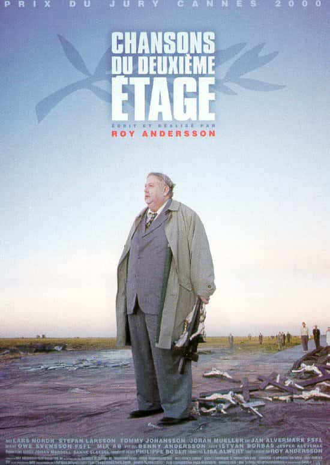
历史与经验拼作十字，人类离开。世界的原型藏在诗里，诗人在沉默、哭泣。“耶稣不是上帝的儿子，他只是一个好人”。乐观显得可笑。赡养人类。伪历史。历史过于厚重，需要重译。
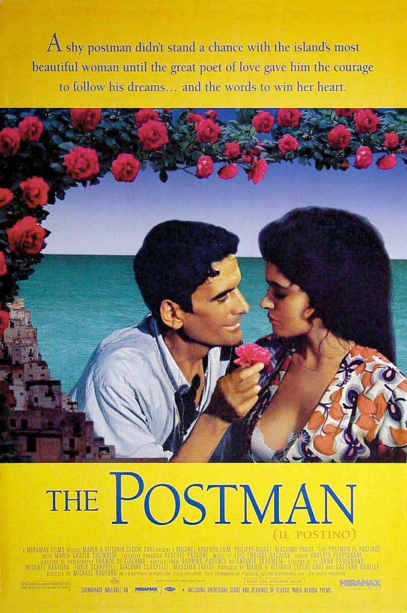
改变人生轨迹的人、事、视角，曾一度痴迷留恋、以至于一度迷惑怀疑，最终未得答案。每种在寻找中得到的理解，都能呈现不一样的人生。最终选择践行的，是一场以生命为单位的实验，像个隐喻。拍于西西里的Salina岛，真是西西里岛上最美妙、浪漫的一部电影。
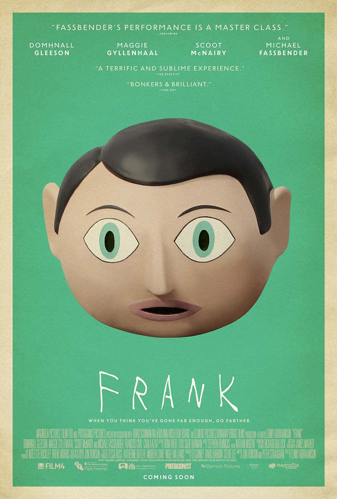
感受特立独行与万劫不复的交织
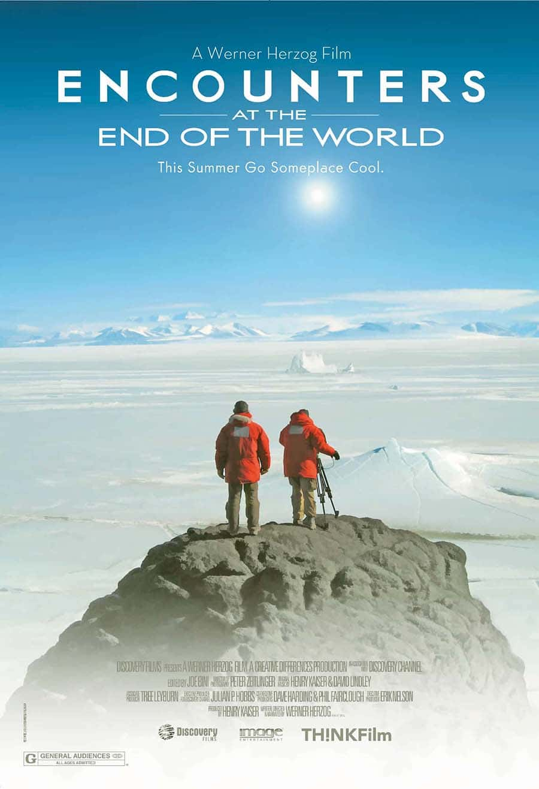